Oftalmologia • Guia de Estudos
Baseado no material da Liga Acadêmica de Oftalmologia • Prof. Jean Fogaça • 18.05.2026
Módulo 1 – Fundo do olho (retina e vítreo) Base / Comum / Urgência / Idosos
1A – Anatomia e Fundamentos (Retina e Vítreo)
Humor Vítreo
- Transparente, avascular, gelatinoso (hidrogel) – consistência similar à clara de ovo.
- Corresponde a 2/3 do volume e peso do olho.
- Não se regenera.
- Hialoide: condensação vítrea que o limita.
- Aderido a: pars plana (corpo ciliar), retina periférica e papila.
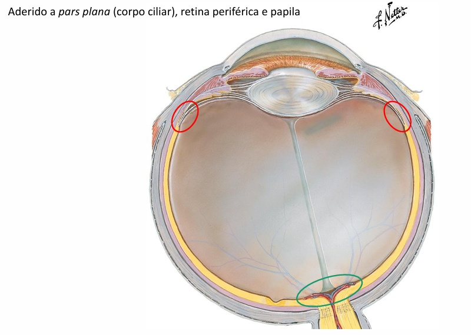
Retina – Características Gerais
- Porção sensorial do olho (formada principalmente por células neurais).
- Tecido fino (0,1–0,5 mm), transparente.
- Cobre 2/3 posteriores do olho.
- 1/3 anterior é "cego" (ora serrata).
- Mácula: temporal e levemente inferior à papila; acúmulo de células ganglionares; avascular (mais escura); responsável pela visão central.
- Fóvea: assoalho central da mácula; parte mais fina; sem células ganglionares; máxima acuidade visual.
- Umbo: ponto central da fovéola.
- Fovéola: assoalho da fóvea.
- Nutrição: artéria/veia central da retina (2/3 anteriores) e coroide/EPR (1/3 posterior – fotorreceptores).
- Não tem inervação sensitiva – apenas informação visual.
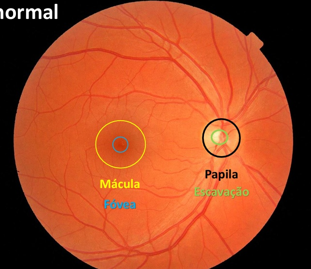
As 10 Camadas da Retina
- Epitelio pigmentar da retina (EPR)
- Camada dos fotorreceptores (Bastonetes e cones)
- Membrana limitante externa
- Camada nuclear externa
- Camada plexiforme externa
- Camada nuclear interna
- Camada plexiforme interna
- Camada de células ganglionares
- Camada de fibras nervosas
- Membrana limitante interna
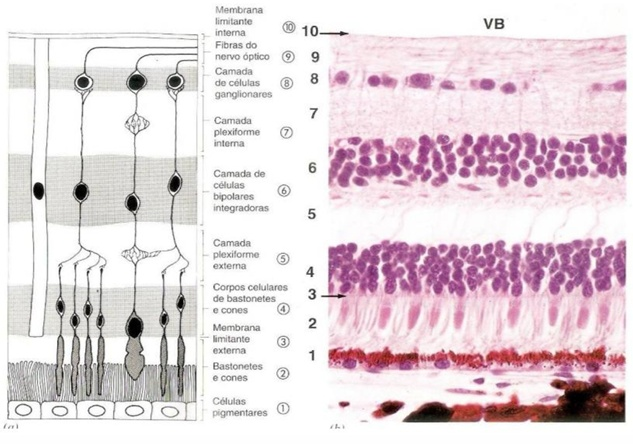
Membrana de Bruch: separa a retina da coroide.
1B – Descolamento do Vítreo Posterior (DVP) – Comum
- Fisiopatologia: liquefação e contração do humor vítreo.
- Epidemiologia: muito comum, especialmente com o envelhecimento.
- Sinais e Sintomas: moscas volantes (em pouca quantidade).
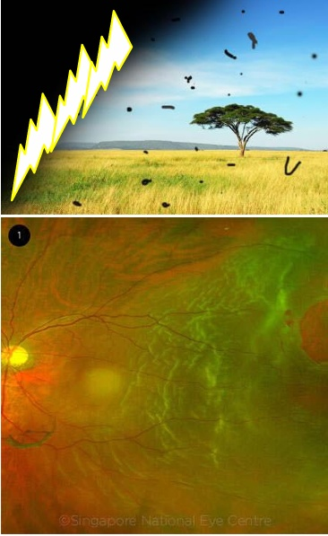
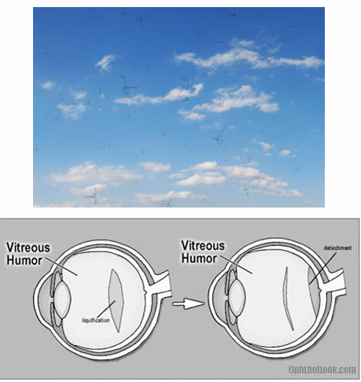
- Risco: pode levar ao descolamento de retina por rotura.
- Diagnóstico: exame de fundo de olho com oftalmoscopia; USG se opacidade de meios.
- Diagnóstico Diferencial: descolamento de retina (que cursa com escotoma e perda visual mais significativa).
- Tratamento: na maioria dos casos, não é necessário. Laser YAG pode ser usado em opacidades grandes.
- Prognóstico: geralmente benigno, com resolução espontânea dos sintomas.
1C – Descolamento de Retina (DR) – Urgência
- Definição: separação anormal entre retina neurosensorial e EPR/coroide. Fotorreceptores perdem suprimento sanguíneo → isquemia.
- Fatores de Risco: miopia (axial), cirurgia oftalmológica (catarata), trauma (bungee jumping).
- Tipos (3 mecanismos):
- Regmatogênico (mais comum): rotura da retina → infiltração de líquido subrretiniano.
- Tracional: tração anteroposterior (mais comumente vítrea) → descolamento.
- Exsudativo: menos comum, exsudação ou sangue subrretiniano (disfunção EPR/coroide, tumor, uveíte posterior).
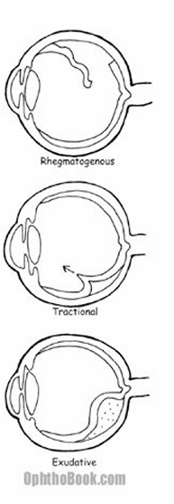
- Sintomas: escotoma (perda de campo visual), moscas volantes (floaters/miodesopsia), flashes (fotopsia).
- Diagnóstico:
- Exame físico: fundoscopia direta ou indireta para visualizar a retina descolada.
- Exames de imagem: ultrassonografia (USG) quando há opacidade de meios (catarata, hemorragia vítrea).
- Diagnóstico Diferencial: DVP (sem escotoma e sem retina visivelmente descolada), retinosquise (separação de camadas sem rotura), neovascularização coroideana (exsudação sem rotura).
- Prognóstico: depende do tempo até o tratamento e do envolvimento macular.
| Quadro Clínico | Tratamento |
|---|---|
| Rotura sem DR (ou DR pequeno/periférico) | Laser (fotocoagulação) |
| DR anterior ao equador | Scleral buckle (cinta de silicone) |
| DR superior | Retinopexia pneumática |
| DR grande, complicado ou com mácula off | Vitrectomia |
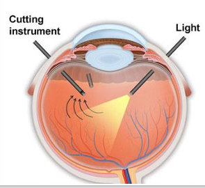
1D – Degeneração Macular Relacionada à Idade (DMRI) – Idosos
- Epidemiologia: principal causa de cegueira em idosos em países desenvolvidos.
- Fisiopatologia: drusas (depósitos extracelulares na membrana de Bruch). Pequenas drusas são normais >50 anos.
- Fatores de Risco: idade (aumento exponencial após 65 anos – principal), tabagismo, doenças cardiovasculares, sexo feminino, história familiar, íris clara.
- Sintomas: baixa acuidade visual central (BAV), metamorfopsia.
- Sinais: drusas (especialmente coalescentes), atrofia geográfica, fluido ou sangue subrretiniano.
- Diagnóstico:
- Exame físico: fundoscopia para visualização de drusas e alterações maculares.
- Exames de imagem: tomografia de coerência óptica (OCT) para avaliar espessura macular e presença de líquido; angiografia fluoresceínica para identificar neovascularização.
.png)
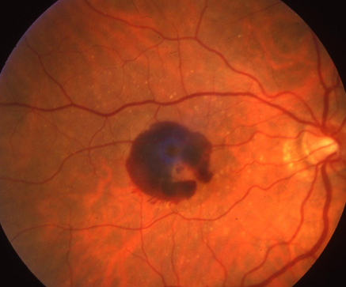
- Diagnóstico Diferencial: retinopatia diabética (exsudatos e microaneurismas difusos), oclusão venosa retiniana (hemorragias em chama de vela), degeneração macular miópica (associada a alto grau de miopia).
Classificação
- Não-exsudativa (seca / não-neovascular)
- Exsudativa (úmida / neovascular)
- Atrofia geográfica
Tratamento – Forma Seca
- Modificar fatores de risco; suplemento vitamínico antioxidante (fórmula AREDS-2).
| Fórmula AREDS-2 | |
|---|---|
| Vitamina C | 500 mg |
| Vitamina E | 400 UI |
| Zinco (óxido de zinco) | 80 mg |
| Cobre (óxido cúprico) | 2 mg |
| Luteína + Zeaxantina | 10 mg + 2 mg |
| Sem betacaroteno | – |
- Tratamento – Forma Úmida: anti-VEGF (terapia intravítrea).
- Prognóstico: a forma seca pode evoluir para a forma úmida; o tratamento precoce é essencial.
Módulo 2 – Olho vermelho – abordagem inicial Diferenciais / Urgência / Emergência
2A – Sinais de Alerta e Fundamentos
SINAIS DE ALERTA (qualquer um • encaminhar com urgência):
Redução da visão • Dor intensa • Reflexo pupilar ausente • Hiperemia perilimbar • Hipópio • Hifema
Redução da visão • Dor intensa • Reflexo pupilar ausente • Hiperemia perilimbar • Hipópio • Hifema
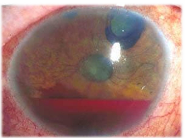
- Olho vermelho: não é uma doença, mas um sinal. Causas possíveis: pálpebra/anexos, conjuntiva, córnea, intraocular.
- Conceitos fundamentais: A retina não possui inervação sensitiva (lesões retinianas não doem). A córnea é a parte do corpo mais inervada por mm².
2B – Conjuntivites – Diferenciais
Conjuntivite Viral
- Epidemiologia: a mais comum. Associada a IVAS, linfonodopatia pré-auricular.
- Sinais/Sintomas: edema palpebral (menos que a bact.) prurido, secreção aquosa/mucoide, folículos, membranas (indicam gravidade).
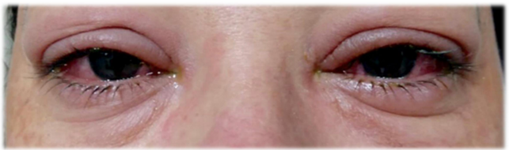
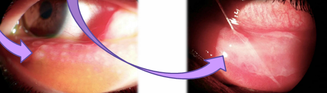
- Duração: 1 a 4 semanas. Resolução em 7–14 dias.
- Diagnóstico: clínico, com exame à lâmpada de fenda; cultura viral raramente necessária.
- Diagnóstico Diferencial: conjuntivite bacteriana (secreção purulenta), alérgica (prurido intenso).
- Tratamento: higiene, compressa fria, colírios lubrificantes. Cuidados de contágio.
Conjuntivite Bacteriana
- Muita secreção purulenta, prurido, sem adenopatia/febre, ↓visão >que na viral; Edema palpebral e fotofobia presentes; Hiperemia Difusa.
- Etiologia: S. aureus e S. pneumoniae (adultos); Haemophilus spp. e M. catarrhalis (crianças).
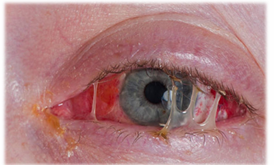
- Diagnóstico: clínico; cultura e antibiograma em casos graves ou refratários.
- Tratamento: colírio antibiótico (fluoroquinolonas) + lubrificante. Encaminhar se hiperaguda, crônica ou má resposta.
Conjuntivite Alérgica
- Bilateral, NÃO contagiosa. Prurido intenso, secreção aquosa, papilas.
- Diagnóstico: clínico, geralmente sazonal ou associado a alérgenos.
- Tratamento: colírios lubrificantes e antialérgicos; corticoide (evitar se possível).
2C – Outras Causas de Olho Vermelho (Urgência / Emergência)
Olho Seco
- Geralmente benigno, subdiagnosticado. Hiperemia interpalpebral, turvação visual, prurido.
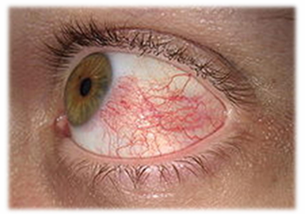
- Diagnóstico: teste de Schirmer, tempo de ruptura do filme lacrimal (TBUT).
- Tratamento: reduzir uso de eletrônicos, colírios lubrificantes.
Sangramento Subconjuntival (Hiposfagma) e Corpo Estranho
- Benigno. Causas: manobra de Valsalva, trauma/coceira, pico hipertensivo (HAS). Assintomático.
- Diagnóstico Corpo Estranho: exame com lâmpada de fenda; fluoresceína para evidenciar lesões epiteliais. Curativo: pomada ATB + cicloplégico (máximo 24h).
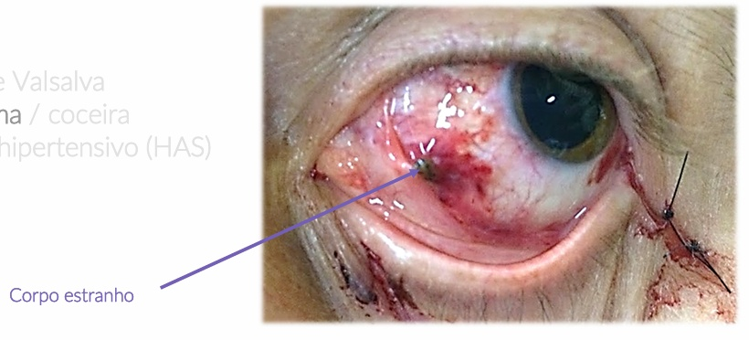
Ceratite
- Inflamação/infecção corneana (viral ou bacteriana). Risco de perda visual. Associada a lentes de contato (LCS).
- Sinais: dor + ↓visão, injeção ciliar, fotofobia.
- Diagnóstico: lâmpada de fenda com fluoresceína (visualiza lesão epitelial com brilho verde) e luz azul; cultura corneana em casos graves.
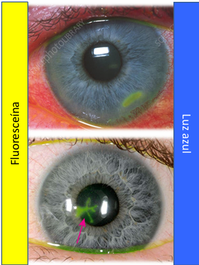
- Diagnóstico Diferencial: abrasão corneana (sem infiltrado inflamatório), uveíte (sem lesão epitelial).
- Atenção: Contraindicado o uso de colírio corticoesteroide sem oftalmologista.
- Tratamento: encaminhar ao oftalmo, colírio ATB.
Uveíte Anterior (Iridociclite)
- Inflamação uveal (íris + corpo ciliar + coroide).
- Sinais: dor + ↓visão, unilateral, injeção ciliar, miose, fotofobia, pode ter hipópio, PIO normal ou baixa.
- Diagnóstico: lâmpada de fenda com células e flare na câmara anterior; exames laboratoriais para doenças sistêmicas se necessário.
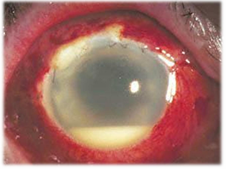
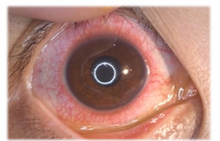
Glaucoma Agudo
- Emergência!!! Cegueira irreversível. Dor intensa + ↓visão (horas/dias), ↑PIO (olho duro), midríase média.
- Diagnóstico: tonometria (PIO elevada), gonioscopia para avaliar ângulo fechado.
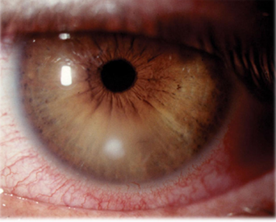
Módulo 3 – Trauma ocular Urgência / Emergência
3A – Abordagem Inicial e Exames (Fundamental)
- Avaliação da Visão: Snellen → cartaz/app → contar dedos → movimentos de mão → percepção de luz.
- Exame Físico ("de fora para dentro"): Pálpebra, motilidade, integridade, posição, hemorragia, córnea, hifema, pupila.
- Proptose: sugere hematoma retrobulbar.
- Enoftalmo: sugere ruptura do globo ou fratura da órbita.
- Teste de Seidel: 1. Pingar fluoresceína; 2. Luz azul; 3. Observar área de diluição (vazamento de humor aquoso) → confirma perfuração ocular.
- Exames complementares: TC indicada para corpo estranho intraocular. Evitar USG se suspeita de ruptura do globo.
- Regra de ouro: O manejo inicial pode ser feito pelo clínico, mas sempre encaminhar ao oftalmologista.
- Proibição absoluta: NUNCA liberar paciente com colírio anestésico (uso exclusivo do médico).
3B – Lesões Específicas (Urgência)
- Laceração Palpebral: Superficiais ≤1/4 da extensão → apenas pomada ATB. Cuidado com alinhamento da margem. Mediais → possível lesão da via lacrimal superior → encaminhar.
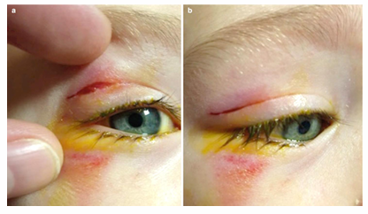
- Abrasão Corneana:
- Diagnóstico: fluoresceína + luz azul (brilho verde intenso).
- Recuperação rápida (<24h). Abrasões lineares verticais → suspeitar de CE na conjuntiva tarsal superior (everter). Traumas "sujos" → ATB profilático.
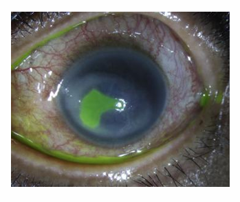
- Corpo Estranho / Laceração Corneana:
- Vegetal (maior risco fúngico). Alto impacto (maior risco intraocular).
- Everter pálpebras (após excluir perfuração).
- Remoção pelo clínico: cotonete umedecido (conjuntiva) ou agulha 25G/lâmina 15 (córnea) + ATB tópico por 5 dias.
3C – Queimaduras (Emergência)
Radiação (Fotoceratite)
- Dor intensa, CE, hiperemia, fotofobia (bilateral). Latência: 6–12h. Autolimitada.
- Diagnóstico: história de exposição UV; fluoresceína → ceratopatia punctata.
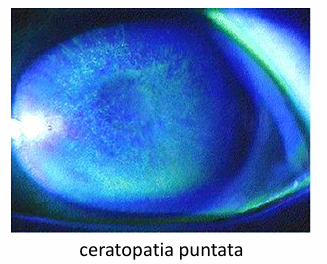
- Tratamento: suporte, compressas frias, óculos escuros, evitar UV.
Queimadura Química – Protocolo de Emergência
- Álcalis (bases, ex: bomba de cal): mais graves (necrose liquefativa, saponificação). Ácidos: menos graves (necrose de coagulação, barreira autolimitada).
- Diagnóstico: avaliação do pH com fita de urina após lavagem.
- Passo 1 (MAIS IMPORTANTE): Irrigação no local do acidente (água filtrada).
- Passo 2: Chegando ao atendimento, irrigação com soro/Ringer (baixa pressão, alto volume) por ≥30 min.
- Passo 3: Anestesia tópica (proparacaína/proximetacaína 0,5%) se disponível.
- Passo 4: Aferir pH no fundo de saco inferior (fita de urina). Se neutro → parar e reconferir após 30 min. Se alterado → manter por +30 min.
- Passo 5: Avaliação oftalmológica emergencial é mandatória (exceto casos muito leves).
Módulo 4 – Retinopatia diabética Microvascular
4A – Epidemiologia, Fisiopatologia e Fatores de Risco (Microvascular)
- Epidemiologia: Uma das maiores causas não-infecciosas de morbimortalidade. Afeta ~7% da população no Brasil. Diabéticos têm 20x mais chance de cegueira. É a 3ª causa de cegueira no Brasil.
- Fisiopatologia: Principal complicação microvascular do DM, representando dano de órgão-alvo. DM1 (autoimune) vs DM2 (genético + estilo de vida).
- Dados (WESDR): Após 20 anos de DM → 99% (DM1) e 60% (DM2) têm algum grau de retinopatia.
- Fatores de Risco: Duração da doença (principal), tipo DM1, HbA1c elevada, HAS, dislipidemia, etnia negra, gravidez, tabagismo.
4B – Diagnóstico, Tratamento e Cuidados (Microvascular)
- Sintomas: inicialmente assintomática; pode gerar BAV, metamorfopsia, moscas volantes (floaters).
- Diagnóstico:
- Exame físico: fundoscopia para visualizar microaneurismas, hemorragias, exsudatos duros, edema macular.
- Exames de imagem: angiografia fluoresceínica (para identificar áreas de isquemia e neovascularização); OCT (para quantificar edema macular).
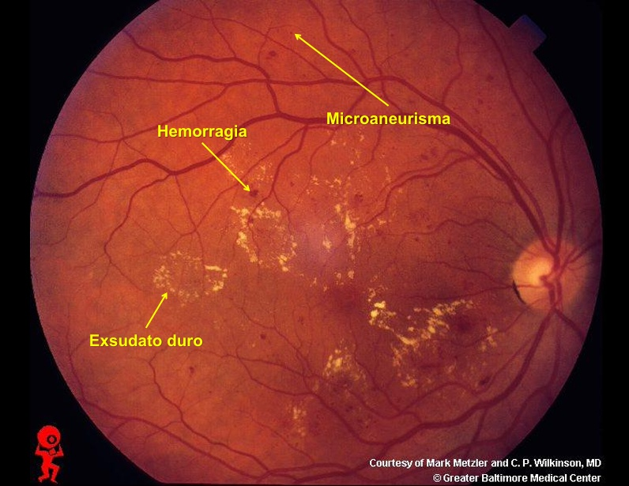
- Diagnóstico Diferencial: retinopatia hipertensiva (hemorragias em chama de vela, exsudatos algodonosos), oclusão venosa retiniana (hemorragias difusas e tortuosidade venosa), DMRI (drusas e alterações maculares em idosos).
- Tratamento: controle glicêmico, pressórico e lipídico rigoroso.
- Intervenções: laser panretiniano (retinopatia proliferativa), anti-VEGF (edema macular), vitrectomia (hemorragia vítrea persistente ou tração).
- Prognóstico: depende do estágio e da resposta ao tratamento; rastreamento regular é essencial.
- Cuidados: exame de fundo de olho anual (ou conforme gravidade); orientar sobre sinais de alerta (perda súbita de visão, manchas).
Módulo 5 – Terminologia Essencial em Oftalmologia Glossário
5A – Conceitos Fundamentais
- Olho Vermelho é um Sinal: não uma doença. Exige investigação criteriosa.
- Retina não dói: não possui inervação sensitiva (apenas visual).
- Córnea é hiperinervada: parte mais inervada do corpo por mm².
- Encaminhamento no Trauma: clínico faz o inicial, mas sempre encaminhar ao oftalmo.
- Proibição de Anestésicos: nunca liberar colírio anestésico para o paciente.
- Proibição de Corticoide na Ceratite: contraindicação absoluta sem supervisão do oftalmo.
5B – Terminologia Essencial
Definições diretas dos principais termos extraídos do material.
Anatomia e Estruturas
| Humor vítreo | Gel transparente, avascular, 2/3 do olho; não se regenera. |
|---|---|
| Hialoide | Condensação vítrea que limita o vítreo. |
| Pars plana | Porção do corpo ciliar onde o vítreo adere. |
| Ora serrata | Limite anterior da retina (1/3 cego). |
| Papila / Disco Óptico | Ponto cego fisiológico por onde saem fibras do nervo óptico. |
| Escavação | Depressão central na papila. |
| Mácula | Área temporal, avascular, responsável pela visão central. |
| Fóvea | Assoalho da mácula, parte mais fina, máxima acuidade visual. |
| Umbo / Fovéola | Pontos centrais da fóvea. |
| Membrana de Bruch | Camada basal que separa a retina da coroide. |
| EPR | Epitélio pigmentar da retina (camada 10). |
Sinais e Sintomas
| Moscas volantes | Floaters / miodesopsia – pontos ou fios que se movem no campo visual. |
|---|---|
| Fotopsia | Flashes luminosos percebidos sem estímulo externo. |
| Escotoma | Perda ou mancha no campo visual. |
| Metamorfopsia | Distorção da forma dos objetos (linhas retas parecem tortas). |
| BAV | Baixa acuidade visual – redução da nitidez da visão. |
| Hiperemia perilimbar | Injeção ciliar – vermelhidão ao redor da córnea. |
| Hipópio | Nível de pus na câmara anterior. |
| Hifema | Nível de sangue na câmara anterior. |
| Midríase / Miose | Dilatação / contração pupilar. |
| Fotofobia | Sensibilidade dolorosa à luz. |
| Proptose / Enoftalmo | Protusão / afundamento do globo ocular. |
Exames e Procedimentos
| Teste de Seidel | Fluoresceína + luz azul → observação de área de diluição (vazamento de humor aquoso). |
|---|---|
| Fluoresceína | Corante tópico que evidencia lesões epiteliais (brilho verde). |
| Fundo de olho | Visualização da retina, papila, mácula e vasos. |
| USG Ocular | Ultrassonografia empregada quando há opacidade de meios. |
| Snellen | Tabela clássica para aferição da acuidade visual. |
| AREDS-2 | Suplemento vitamínico antioxidante para DMRI seca. |
Condições e Tratamentos
| DR Regmatogênico | Descolamento de retina por rotura retiniana (mais comum). |
|---|---|
| Scleral buckle | Cinta de silicone escleral para correção de descolamento de retina. |
| Vitrectomia | Cirurgia para remoção do humor vítreo. |
| Fotocoagulação | Procedimento a laser para selar roturas ou tratar vasos anormais. |
| Iridociclite | Uveíte anterior (inflamação da íris e corpo ciliar). |
| Hiposfagma | Sangramento subconjuntival (derrame ocular). |
| Fotoceratite | Lesão epitelial da córnea por exposição UV. |
| LCS | Abreviatura para Lentes de Contato. |
Retina: 10 camadas. Mácula (central), Fóvea (máx. acuidade).
DR: Regmatogênico (mais comum). Trat: Laser, Buckle, Pneumática, Vitrectomia.
DMRI: AREDS-2 (seca). Anti-VEGF (úmida).
Olho Vermelho: Alertas: ↓visão, dor, reflexo ausente, perilimbar, hipópio, hifema.
Trauma: Seidel + Irrigação (químicos) + Nunca liberar anestésico.
RD: Rastrear DM; laser panretiniano se proliferativa.
Material organizado para estudo • Liga Acadêmica de Oftalmologia • Prof. Jean Fogaça
HTML desenvolvido por Fernando Luis G. R.